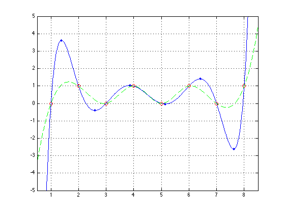

Lagrange Interpolation Polynomial
If you have a set of N points on a cartesian plane, there will always exist an N-1th order polynomial of the form y = a_0 + a_1.x + a_2.x^2 + ... a_n-1.x^(n-1) which passes through all the points. Lagrange came up with a neat approach to finding this polynomial, which is to construct a set of `basis' polynomials which are zero at all the specified points except for one, then scale and add them to match all the control points. LAGRANGEPOLY returns this polynomial, defined by the polynomial coefficients (a_0 .. a_n-1 above), arranged in the same vector form used by Matlab builtins such as POLYVAL.
LAGRANGEPOLY optionally returns the x and y co-ordinates of all the extrema and points of inflection of the polynomial too, since these are easily found from the polynomial form.
Lagrange interpolation has generally been replaced by spline fitting these days; see the SPLINE function.
For more information on Lagrange interpolation, there is a good explanation on the Mathworld web site, http://mathworld.wolfram.com/LagrangeInterpolatingPolynomial.html
Contents
Example
Find the polynomial going through 8 evenly-spaced points, then plot the curve, along with the control points (red circles, to check the curve does indeed go through them) and the extrema (blue dots).
Also, compare to SPLINE (dotted green line), which also passes through the points without such extreme deviation (but is not in the form of a single polynomial).
X = [1 2 3 4 5 6 7 8]; Y = [0 1 0 1 0 1 0 1]; [P,R,S] = lagrangepoly(X,Y); xx = 0.5 : 0.01 : 8.5; plot(xx,polyval(P,xx),X,Y,'or',R,S,'.b',xx,spline(X,Y,xx),'--g') grid axis([0.5 8.5 -5 5])